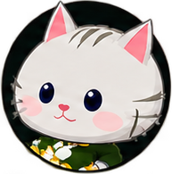
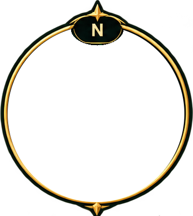

Tip: press H in the game for the list of all controls.


Skills
Trader
Inventory
Gold
Click to wear or drink · click a worn item to take it off · drag onto the action bar · right-click twice to destroy
World Map
Enchant weapon
Settings
A change is at work at once and is remembered in this browser.
Sound
Graphics
Controls
Everything the keyboard and the mouse do. H or F1 closes this window.
Moving and looking
WASD / arrows
Move, relative to the camera
Space
Jump; once more in the air for a double jump
X
Sit down to rest: health and mana come back much faster
RMB drag / wheel
Turn the camera / zoom
Fighting
Click / Tab
Select a monster or a cat / the next nearest monster
1
Attack the target and keep hitting it - the first slot of the action bar; so does a click on the selected monster, or a right click on any
2 – 9, 0
The other slots of the action bar: cast the skill, drink the potion or wear the gear in the slot
Shift
Dash, once the Rogue has learned Shadow Step
Esc
Close the open window, else clear the target
Fighting other cats
Ctrl + click
Attack a cat, outside the safe places. So does the Attack button under its name. Attacking turns your name purple for a while: anyone may fight a purple cat
PvP
Beating a cat that fought back, or an outlaw, is a fight won
PK
Killing a cat that never fought back is murder: it leaves karma and a red name. Anyone may attack an outlaw without turning purple, and it loses experience when it falls. Monsters work karma off
Action bar
Drag
A learned skill from the skill book, or an item from the inventory, onto a slot. Drag a slot onto another to swap them
Right click
Clear a slot; so does dragging it off the bar
Windows
C
Character: attributes and combat stats
I
Inventory: the bag and what the cat wears
K
Skill book; next to the Sage it sells skills and professions
M
World map: the whole island, its zones and their levels, the monster camps. A click on the radar opens it too
T
Trade, next to the Trader
B
Enchant your weapon next to the Blacksmith, who does it with a steadier hand for a fee. It takes a Scroll: Enchant Weapon; a click on the scroll in the bag does it anywhere
O
Settings: sound and graphics
H / F1
This window
Other
Enter
Write in the chat, send the message; a click on its line does the same. Its System tab shows only what the game said
+− on the radar
Show less or more of the surroundings
An open online world of cats: level up and hunt monsters together with other players